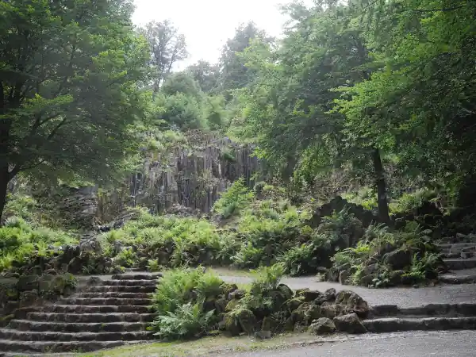

Start / Steinhöfer Wasserfall
Aaron Schiele
geprüft am
geprüft am
Wann läuft der Wasserfall in Kassel?
An Wasserspieltagen gegen 15.05 Uhr. Wasserspieltage sind zwischen dem 1. Mai und dem 3. Oktober jeder Mittwoch, jeder Sonntag und jeder hessische Feiertag; jedes Wasserbild wird etwa zehn Minuten in Szene gesetzt. Die Saison 2026 ist vorbei; 2027 laufen die Wasserspiele vom 1. Mai bis 3. Oktober, das hat die Stadt Kassel bestätigt.
Bei den Beleuchteten Wasserspielen am Abend ist der Steinhöfer Wasserfall nicht dabei, dort springt das Programm von den Kaskaden direkt zur Teufelsbrücke.
Wie passt der Wasserfall in den Ablauf der Wasserspiele?
- Start an den Kaskaden
- hier am Steinhöfer Wasserfall
- an der Teufelsbrücke
- am Aquädukt
- Große Fontäne vor dem Schloss
Zwischen Kaskaden und Wasserfall liegen gut eine halbe Stunde, das reicht für den Weg bergab ohne Hetze. Danach geht es zügig weiter: Bis zur Teufelsbrücke hast du nur eine Viertelstunde. Alles kostet keinen Eintritt, du folgst dem Wasser einfach zu Fuß talwärts, insgesamt rund 2,3 Kilometer bis zum Schloss.
Was ist das Besondere an diesem Wasserfall?

Er sieht aus, als hätte die Natur ihn geschaffen, ist aber Gartenkunst aus dem Jahr 1793. Das Wasser kommt ohne eine einzige Pumpe aus: Es wird oben im Habichtswald in Becken gesammelt und fließt allein mit dem Gefälle, die Ventile werden von Hand geöffnet.
Ohne Wasserspiele siehst du vor allem die stille Felswand zwischen Farnen und alten Bäumen. Auch das hat seinen Reiz, aber der Moment, wenn das Wasser über die Felsen schießt, ist der eigentliche Grund, hier zu stehen.
Wie komme ich zum Steinhöfer Wasserfall?
Vom Herkules sind es rund 1.200 Meter bergab, gut eine Viertelstunde zu Fuß. Vom Schloss Wilhelmshöhe aus sind es rund 1,3 Kilometer, aber bergauf, rechne also deutlich mehr Zeit ein.
- Mit dem Auto: Parke am Herkules, wenn du den ganzen Ablauf sehen willst, oder unten am Schloss und fahr mit dem Bus 23 hinauf. Preise und Tipps stehen unter Parken am Bergpark.
- Mit Bus und Bahn: Tram 4 bis Druseltal, dann Bus 22 zum Herkules; an Wasserspieltagen fährt zusätzlich der Bus 23 ab Wilhelmshöhe (Park). Alle Wege stehen unter Mit Bus und Bahn zum Bergpark.
Was sollte ich vorher wissen?
Die Wege sind befestigt, aber nur bedingt barrierefrei, an den Kaskaden gibt es Treppen ohne Geländer. Feste Schuhe und ein sicherer Tritt helfen. Wegen Bauarbeiten kann es im Park Einschränkungen geben; wie es gerade aussieht, sagt dir der Besucherservice von Hessen Kassel Heritage unter +49 561 316 80-123. Hunde dürfen mit, an der kurzen Leine.
Häufige Fragen
Wann läuft der Steinhöfer Wasserfall?
Gegen 15.05 Uhr für etwa zehn Minuten, und zwar an jedem Wasserspieltag zwischen dem 1. Mai und dem 3. Oktober, also mittwochs, sonntags und an den Feiertagen in Hessen.
Kostet der Wasserfall Eintritt?
Nein. Der Bergpark ist das ganze Jahr kostenlos zugänglich, auch die Wasserspiele kosten nichts.
Ist der Steinhöfer Wasserfall bei den Beleuchteten Wasserspielen dabei?
Nein. Abends werden Kaskaden, Teufelsbrücke, Aquädukt und Jussowtempel beleuchtet, den Abschluss macht die Große Fontäne.
Wie lange brauche ich vom Herkules zum Wasserfall?
Gut eine Viertelstunde für rund 1.200 Meter bergab. Zwischen dem Start der Wasserspiele an den Kaskaden und dem Wasserfall liegen 35 Minuten, das reicht gut.
Was kommt nach dem Wasserfall?
Eine Viertelstunde später die Teufelsbrücke, danach das Aquädukt und um 15.45 Uhr als Höhepunkt die Große Fontäne vor dem Schloss, gegen 16 Uhr ist Schluss.
Quellen abgerufen am 20.10.2026
- Hessen Kassel Heritage Wasserspiele · Bergpark Wilhelmshöhe · Parkordnung Bergpark
- Stadt Kassel Wasserspiele · Beleuchtete Wasserspiele · Anreise mit dem ÖPNV
- Beleuchtete Wasserspiele Kassel Beleuchtete Wasserspiele Kassel
- Wikipedia Bergpark Wilhelmshöhe
- OpenStreetMap-Routing Fußwege
Weiterlesen

Wasserspiele Kassel
Wasserspiele Kassel im Bergpark Wilhelmshöhe: wann sie laufen, Ablauf mit Uhrzeiten, Route vom Herkules zur Fontäne, Eintritt frei, Anreise.
Weiterlesen
Bergpark Wilhelmshöhe Kassel
Bergpark Wilhelmshöhe in Kassel: was dich im UNESCO-Welterbe erwartet, Eintritt (Park frei), ein Rundweg bergab für einen Tag und die Anreise.
Weiterlesen
Herkules Kassel
Herkules Kassel: Was das Monument ist, wann Oktogon und Plattform offen sind, was der Eintritt kostet und wie du mit Bus oder Auto hinaufkommst.
Weiterlesen